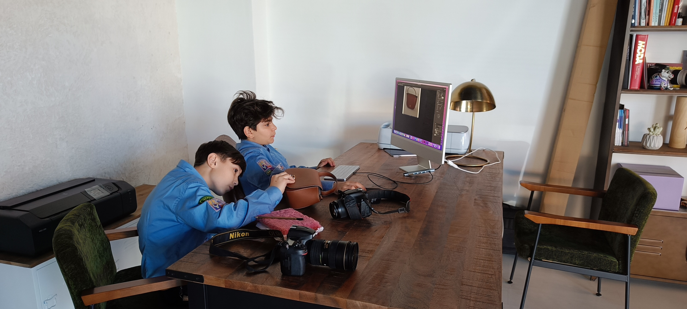
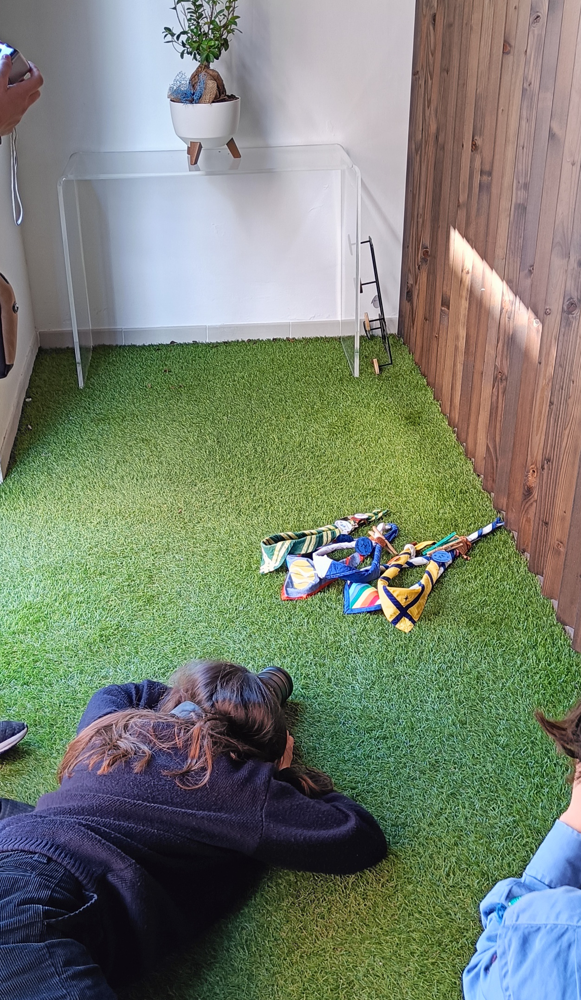

<script src="head.js"></script>
<script src="inner.js"></script>

  <main id="main">

    <!-- ======= Breadcrumbs ======= -->
    <section id="breadcrumbs" class="breadcrumbs">
      <div class="container">

        <ol>
          <li><a href="index.html">Home</a></li>
          <li>kaleidoscopiolab</li>
        </ol>
        <h2>kaleidoscopiolab</h2>

      </div>
    </section><!-- End Breadcrumbs -->

    <!-- ======= Portfolio Details Section ======= -->
    <section id="portfolio-details" class="portfolio-details">
      <div class="container">

        <div class="row gy-4">

          <div class="col-lg-6">
            <div class="portfolio-details-slider swiper">
              <div class="swiper-wrapper align-items-center">
                <div class="swiper-slide">
                  
                </div>
                <div class="swiper-slide">
                  
                </div>
              </div>
              <div class="swiper-pagination"></div>
            </div>
          </div>

          <div class="col-lg-6">
            <div class="portfolio-info">
              <h3>Informazioni</h3>
              <ul>
                <li><strong>Categoria</strong>: studio fotografico</li>
                <li><strong>Instagram</strong>: <a href="https://www.instagram.com/kaleidoscopiolab/">kaleidoscopiolab</a></li>
                <li><strong>Facebook</strong>: <a href="https://www.facebook.com/labkaleidoscopio">kaleidoscopiolab</a></li>
                <li><strong>mail</strong>: <a href="mailto:info@kaleidoscopiolab.it">kaleidoscopiolab</a></li>
              </ul>
            </div>
            <div class="portfolio-description">
              <h2>Descrizione</h2>
              <p>
                KaleidoscopioLab è uno studio fotografico</p>
            </div>
          </div>

        </div>
		
<!--		<div class="row gy-4">-->
<!--		  <div class="col-lg-12">-->
<!--			<div class="portfolio-description">-->
<!--			  <h2>Kaleidoscopio Lab</h2>-->
<!--			  <p>-->
<!--                Kaleidoscopio Lab nasce <tempo></tempo>, come un’evoluzione del tradizionale catalogo librario: e si propone come un innovativo spazio virtuale di lettura aumentata, grazie alla possibilità di fruire di contenuti aggiuntivi che arricchiscono la lettura del libro.-->
<!--                Nel “LAB,” puoi trovare una raccolta di laboratori e attività creative da seguire passo dopo passo per arricchire la tua esperienza di lettura. Questi laboratori sono pensati per te e i tuoi bambini, e ti permetteranno di esplorare ulteriormente il mondo dei libri.</p>-->
<!--			  <p class="firma">Autore</p>-->
<!--			</div>-->
<!--          </div>-->
<!--		</div>-->

      </div>
    </section><!-- End Portfolio Details Section -->

  </main><!-- End #main -->

  <script src="footer.js"></script>